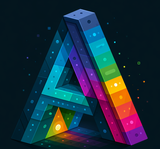

Two editors, two targets. Pick one.
settings.json
For Tinfoil, the Switch shop app. Edit every field through a proper UI instead of hand-writing raw JSON.
.ziptheme.json
For the RomM Switch client. Recolour it, give it a background, its own font, mascot art and music.
theme.json